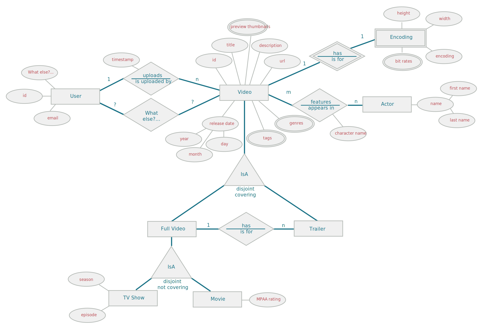

Exercise 1: Setting Up The Lab Environment
In this exercise, you will:
-
Setup the virtual machine for this course
-
Familiarize yourself with
cqlsh
Steps
Start the lab virtual machine
1) Verify that your system has Oracle VM VirtualBox Manager or other virtual machine software installed.
2) Extract the instructor-provide .zip file to a convenient location.
3) Open the directory created and double-click on the VM file that works with your virtual machine software.
|
Note
|
This is either DS220.vbox for VirtualBox, or DS220.vmx for VMware. If you have any other virtualization software installed, you will need to know how to create a new virtual machine and add the box-disk1.vmdk disk image.
|
4) Start the VM and verify the virtual machine has launched. You should see a desktop with icons on the left.
Run cqlsh
1) On the VM desktop, open the command-line Terminal.
2) Start the Cassandra tool cqlsh. You can run cqlsh or any Cassandra / DSE tool from any directory because they are in your $PATH.
|
Important
|
If cqlsh is not able to connect to DataStax Enterprise, use the command service dse status to see if DSE is running. If for some reason DSE is not running, you can start it with service dse start.
|
3) In cqlsh, note the prompt header changed to cqlsh> indicating further commands are for cqlsh instead of the Linux shell.
4) Execute the following query:
SELECT * FROM system.schema_keyspaces;cqlsh displays the results immediately. Notice the built-in keyspaces. Your cqlsh environment is working correctly.
5) Type exit to quit cqlsh.
Exercise 2: Challenge 1—Adding a keyspace and table
In this challenge, you will:
-
Create a keyspace for KillrVideo
-
Create a table to store video metadata
-
Load the data for the video table from a CSV file
Background
Welcome to the KillrVideo company! KillrVideo hired you to build the latest and greatest video sharing application on the Internet. Your task is to ramp up on the domain and become acquainted with Cassandra. To start, you decided to look into creating a table schema and to load some video data.
The video metadata is made up of:
| Column Name | Data Type |
|---|---|
video_id |
timeuuid |
added_date |
timestamp |
description |
text |
title |
text |
user_id |
uuid |
Steps
1) If necessary, launch the provided training VM and open a Terminal window.
2) Open /root/labwork/exercise-2/videos.csv with a text editor and review the contents of the file.
|
Important
|
Notice the order of the columns matches the order shown above. |
3) Open a terminal and navigate to the /root/labwork/exercise-2 directory.
4) In the Terminal window, start cqlsh.
5) In cqlsh, create a keyspace called killrvideo and switch to that keyspace. Use SimpleStrategy for the replication class with a replication factor of one.
|
Note
|
You can press the tab key within the CREATE KEYSPACE command to have cqlsh autocomplete the replication parameters.
|
6) Create a single table called videos with the same structure as shown above. video_id is the primary key.
7) Load the newly created table with the videos.csv file using the COPY command.
COPY videos FROM 'videos.csv' WITH HEADER=true;|
Note
|
Notice COPY does not require column names when the target table schema and source CSV file columns match respectively. We will see more on table schema later. |
8) Use SELECT to verify the data loaded correctly. Include LIMIT to retrieve only the first 10 rows.
9) Use SELECT to COUNT(*) the number of imported rows. It should match the number of rows COPY reported as imported.
10) Exit cqlsh.
Exercise 3: Challenge 2—Composite Partition Keys
In this challenge, you will:
-
Create a new table that allows querying videos by title and year using a composite partition key
Background
Your peers need to query videos based on title and added_year. The new columns for this table are:
| Column Name | Data Type |
|---|---|
title |
text |
added_year |
int |
added_date |
timestamp |
description |
text |
user_id |
uuid |
video_id |
uuid |
Steps
1) Use a text editor to view the labwork/exercise-3/videos_by_title_year.csv file.
2) Open Terminal and navigate to labwork/exercise-3/.
3) Start cqlsh and create a second table in the killrvideo keyspace called videos_by_title_year with the above structure. Be sure users can query this table on both title and added_year by combining them into the partition key.
4) Load the data from the videos_by_title_year.csv file using the COPY command.
COPY videos_by_title_year FROM 'videos_by_title_year.csv' WITH HEADER=true;6) Try running queries on the videos_by_title_year table to query on a specific title and added_year.
Example:
| title | added_year |
|---|---|
Introduction To Apache Cassandra |
2014 |
Sleepy Grumpy Cat |
2015 |
Grumpy Cat: Slow Motion |
2015 |
AzureDev |
2015 |
7) What error does Cassandra return when you try to query on just title or just year? Why?
Exercise 4: Challenge 3—Clustering Columns
In this challenge, you will:
-
Create a
videos_by_tag_yeartable that allows range scans and ordering by year
Background
There have been some interesting wrinkles in your quest to understand how Cassandra and CQL work. Although you have been able to complete your tasks to the letter, your team cannot query based on tag and year. Fortunately, your new understanding of clustering columns will help to improve your design. You decide to build a table that allows querying by tag and added_year. The columns are as follows:
| Column Name | Data Type |
|---|---|
tag |
text |
added_year |
int |
video_id |
uuid |
added_date |
timestamp |
description |
text |
title |
text |
user_id |
uuid |
Steps
1) In your terminal, navigate to labwork/exercise-4 directory. Launch cqlsh and switch to the killrvideo keyspace.
2) To become an upsert ninja, create the following (bad) table with the (crummy) primary key:
CREATE TABLE bad_videos_by_tag_year (
tag text,
added_year int,
added_date timestamp,
title text,
description text,
user_id uuid,
video_id timeuuid,
PRIMARY KEY ((video_id))
);3) As an aside, use DESCRIBE TABLE to view the structure of your bad_videos_by_tag_year table.
|
Note
|
Notice the column order differs from the CREATE TABLE statement. Cassandra orders columns by partition key, clustering columns (shown later), and then alphabetical order of the remaining columns. |
4) Execute the following COPY command to import videos_by_tag_year.csv file.
COPY bad_videos_by_tag_year (tag, added_year, video_id, added_date, description, title, user_id) FROM 'videos_by_tag_year.csv' WITH HEADER=true;|
Note
|
We must explicitly list the column names because this table schema no longer matches the CSV structure. |
Note the number of imported rows. Now COUNT() the number of rows in the bad_videos_by_tag_year.
SELECT COUNT(*)
FROM bad_videos_by_tag_year;Notice the number of rows in the bad_videos_by_tag_year does not match the number of rows imported from videos_by_tag_year.csv. Since videos_by_tag_year.csv duplicates video_id for each unique tag and year per video, Cassandra upserted several records during the COPY. video_id is not a proper partition key for this scenario.
5) Drop your nasty table.
DROP TABLE bad_videos_by_tag_year;Your mission is to restructure your table and allow users to query on |
Steps
1) Create a table with the columns above to facilitate querying for videos by tag within a given year range returning the results in descending order by year. We wrote most of the CREATE TABLE for you. Fill in the PRIMARY KEY and CLUSTERING ORDER BY.
CREATE TABLE videos_by_tag_year (
tag text,
added_year int,
video_id timeuuid,
added_date timestamp,
description text,
title text,
user_id uuid,
PRIMARY KEY ( )
) WITH CLUSTERING ORDER BY ( );2) Load the data from the videos_by_tag_year.csv file in the provided exercise-4 directory using the COPY command.
COPY videos_by_tag_year FROM 'videos_by_tag_year.csv' WITH HEADER=true;3) Check the number of rows in the videos_by_tag_year table.
|
Note
|
The number of rows should match the number of rows imported by the COPY command. If not, you had upserts again and will need to adjust your PRIMARY KEY. Ask your instructor for help if necessary. |
6) Try running queries on the videos_by_tag_year table to query on a specific tag and added year.
Example:
| tag | added_year |
|---|---|
trailer |
2015 |
cql |
2014 |
spark |
2014 |
7) Try querying for all videos with tag "cql" added before the year 2015. Notice you can do range queries on clustering columns.
8) Try querying for all videos added before 2015. The query will fail. What error message does cqlsh report? Why did the query fail whereas the previous query worked?
Exercise 5: Challenge 4—Adding Tags and Video Encoding
In this challenge, you will:
-
Create a user defined type
-
Alter an existing table and add additional columns
Background
After reviewing your design of the tables that support tag and year queries, your manager happened to remember that there isn’t a tags column in the original table that stores video metadata. You have now been asked to include that in the videos table schema and also to add another column to store video encoding information.
The revised videos table schema:
| Column Name | Data Type |
|---|---|
video_id |
timeuuid |
added_date |
timestamp |
description |
text |
encoding |
video_encoding |
tags |
set<text> |
title |
text |
user_id |
uuid |
The encoding data structure:
| Field Name | Data Type |
|---|---|
bit_rates |
set<text> |
encoding |
text |
height |
int |
width |
int |
Steps
1) Use a text editor to open and review the videos.csv file in the labwork/exercise-5 directory. Notice the addition of the tags column. Also open and review the videos_encoding.csv file.
2) In Terminal, navigate to labwork/exercise-5. Launch cqlsh and switch to the killrvideo keyspace.

3) Run the TRUNCATE command to erase the data from the videos table.
4) Alter the videos table to add a tags column.
5) Load the data from the videos.csv file using the COPY command.
COPY videos FROM 'videos.csv' WITH HEADER=true;6) Create a user defined type called video_encoding with the structure given above.
7) Alter your table to add an encoding column of the video_encoding type.
8) Load the data from the videos_encoding.csv file using the COPY command.
COPY videos (video_id, encoding) FROM 'videos_encoding.csv' WITH HEADER=true;9) Run a query to retrieve the first 10 rows of the videos table.
Notice the altered table contains data for the new tags and encoding column.
Exercise 6: Challenge 5—Using Counters In CQL
In this challenge, you will:
-
Create a new table that makes use of the counter type
-
Load the newly created table with data
-
Run queries against the table to test counter functionality
Background
You have been on a roll lately designing tables, and that hasn’t gone unnoticed. Since no good deed goes unpunished, your team has unanimously agreed to let you tackle one of the trickier problems they encountered learning Cassandra.
The problem is with keeping track of the number of videos in a particular category. Whenever a tag is added to a video, a transaction is done which reads the number of videos for that video category, increments it by one, and updates it in the database. However, this technique is susceptible to race conditions. Cassandra is a distributed database that allows for concurrent, simultaneous operations, and it does not allow transactions. Your team has been stumped on how to get this functionality working correctly in Cassandra. Fortunately, you have just read up on the counter type and know that it is the perfect way to solve this problem.
The requirement itself is to be able to support a query that can retrieve the number of videos for a particular category, defined as a specific tag and year added. The query allows querying on a tag, and optionally, on a range for the added year.
Steps
1) Navigate to labwork/exercise-6 and open the videos_count_by_tag.cql file and review its contents. Notice this is a CQL script rather than a CSV data file.
2) In your Terminal, go to the labwork/exercise-6 directory.
3) Launch cqlsh and switch to killrvideo keyspace.
4) Create a new table called videos_count_by_tag with a column video_count which makes use of a counter type to store the video count. Structure your table to work correctly with the CQL in videos_count_by_tag.cql.
5) Load the number of counts from the videos_count_by_tag.cql file into the videos_count_by_tag table using the SOURCE command.
6) Run a query to display each category of tag and added year, along with the count of videos for each.
7) Simulate adding another a tag for another video by incrementing the video count for a category, and then querying the new count from the videos_count_by_tag table.
Exercise 7: Challenge 6—Denormalized Tables
In this challenge, you will:
-
Create tables to support querying for videos by actor or genre
Background
With all of the success you’ve been having on the video sharing development team, you have been promoted and assigned to work on a high-priority project to incorporate movie content into the KillrVideo application.
Your new team is normalizing their video and actor metadata into separate tables and currently are stuck figuring out how to join tables in Cassandra. Having been around the Cassandra block a few times, you know that JOINs are expensive and not supported. It is up to you to show your team the optimal way of performing these queries.
The video metadata is similar to what was in the video sharing domain:
| Column Name | Data Type |
|---|---|
video_id |
timeuuid |
added_date |
timestamp |
description |
text |
encoding |
video_encoding |
tags |
set<text> |
title |
text |
user_id |
uuid |
There is also the additional following metadata:
| Column Name | Data Type |
|---|---|
actor |
text |
character |
text |
genre |
text |
With this metadata, the data model must support the following queries:
Q1: Retrieve videos an actor has appeared in (newest first).
Q2: Retrieve videos within a particular genre (newest fist).
Steps
Create a videos_by_actor table
1) In cqlsh, create a new table called videos_by_actor which will support query Q1. We provided most of the CREATE TABLE for you except the PRIMARY KEY.
CREATE TABLE videos_by_actor (
actor text,
added_date timestamp,
video_id timeuuid,
character_name text,
description text,
encoding frozen<video_encoding>,
tags set<text>,
title text,
user_id uuid,
PRIMARY KEY ( )
) WITH CLUSTERING ORDER BY ( );2) Load videos_by_actor.csv into the videos_by_actor table using the COPY command.
COPY videos_by_actor FROM 'videos_by_actor.csv' WITH HEADER = true;3) Run a query to retrieve the video information for a particular actor (Tom Hanks, Denzel Washington, or see if your favorite actor is in there).
4) Try SELECTing just the actor and the added_date columns. Notice the order of added_dates.
Create a videos_by_genre table
1) In cqlsh, create a new table called videos_by_genre which will support query Q2. We provided most of the CREATE TABLE for you except the PRIMARY KEY.
CREATE TABLE videos_by_genre (
genre text,
added_date timestamp,
video_id timeuuid,
description text,
encoding frozen<video_encoding>,
tags set<text>,
title text,
user_id uuid,
PRIMARY KEY ( )
) WITH CLUSTERING ORDER BY ( );2) Load videos_by_genre.csv into the videos_by_genre table using the COPY command.
COPY videos_by_genre FROM 'videos_by_genre.csv' WITH HEADER = true;3) Run a query to retrieve the video information for a particular genre (Future noir, Time travel).
Exercise 8: Final Challenge
In this challenge, you will:
-
Attempt to enhance your data model to meet the new requirements of KillrVideo
Background
Excited by the progress that has been made on the data modeling for this project, the product team has started adding more and more user features. You have been tasked with ensuring that all of these requirements for these user features can be met with the data model that is being designed.
Roadmap:

Queries:
Q1: Find a user with a specified email
Q2: Find most recently uploaded videos
Q3: Find a user with a specified user id
Q4: Find videos uploaded by a user with a known id (show most recently uploaded videos first)
Q5: Find comments posted by a user with a known id (show most recently posted comments first)
Q6: Find comments posted for a video with a known id (show most recent comments first)
Q7: Find an average rating with a known id (show most recent comments first)
Q8: Find a video with a specified video id
Q9: Find trailers for a video with a known id (show title in ascending order)
Q10: Find video interactions for a user with a known id and specified video id (show most recent interactions first)
Q11: Find actors for a video with a known id (show actor names in ascending order)
Steps
1) In your Terminal, launch cqlsh and switch to killrvideo keyspace.
2) Beat your head against the wall and cry knowing that you need a better methodology than just "winging it" to build the Cassandra data model to support these queries.
3) Start looking for a new job…OR! attend DataStax DS220!
Exercise 9: Model The KillrVideo Entities
In this exercise, you will:
-
Identify the entity types, relationship types, and attribute types
Steps
Diagram KillrVideo entities and their attributes
Here is a almost complete conceptual model of the KillrVideo domain:

Note the "What else?" areas for both attributes and relationships for User. Identify what further attributes would also describe the User entity type. Also determine what other relationships are necessary between User and Video.
Exercise 10: Application Workflow And Access Patterns
In this exercise, you will:
-
Finish the application workflow based KillrVideo query requirements
-
Add the remaining access patterns based on KillrVideo query requirements
Steps
Using the following KillrVideo tasks, finish filling out the application workflow diagram and access patterns.
-
Find comments posted by a user with a known id (show most recently posted comments first)
-
Find comments posted for a video with a known id (show most recent comments first)
-
Find an average rating with a known video id
-
Find trailers for a video with a known id
-
Find video interactions for a user with a known id and specified video id (show most recent interactions first)
-
Find actors for a video with a known id
Exercise 11: Extend The KillrVideo Logical Model
In this exercise, you will:
-
Add tables to the logical model to support additional queries
-
Ensure that the mapping rules are applied appropriately
Background
The KillrVideo product team wants to add additional query capabilities to the application. Specifically the following queries will need to be supported:
Q1. Find all user videos that match a specific tag (show the most recent uploaded videos first)
Q2. Find all movies that features a specific actor and release year range (show the most recent videos first, and then sorted by title)
Q3. Find all movies that features a specific actor, genre and release year range (show the most recent videos first, and then sorted by title)
The conceptual model outlines the available attributes for the appropriate entities and relationships.
Steps
-
On paper or in a text editor, create a logical Chebotko diagram that can support Q1.
-
On paper or in a text editor, create a logical Chebotko diagram that can support Q2.
-
On paper or in a text editor, create a logical Chebotko diagram that can support Q3.
-
For each query, answer the following questions:
-
What entity or relationship type is being stored in a partition or row?
-
What are the key attribute(s) for this table?
-
What attribute is used for the partition key(s) that enabled the equality query?
-
What attribute is used for the cluster column(s) that enables the inequality / range scan?
-
What are the clustering column(s) and ordering that support the required results?
-
Exercise 12: Map Additional Requirements For KillVideo
In this exercise, you will:
-
Use mapping patterns from the query-driven methodology to design tables for new queries
Background
Great news! Due to your excellent work so far with the Apache Cassandra migration, your lead has given you the responsibility of designing the logical model for several additional requirements. This includes modeling data for custom user playlists and user channels.
The relevant part of the conceptual data model now looks like:
The following queries will need to be supported:
Q1. Find playlists with the specified owner and modified timestamp range (show the most recently modified playlists first)
Q2. Find all channels subscribed to by a specified user (show the channel names in alphabetical order)
Q3. Find all videos that are contained in a specified channel
Steps
-
On paper or in a text editor, use a mapping pattern to create a logical Chebotko diagram that can support Q1.
-
What mapping pattern best matches the requirements for this query?
-
Did the search attributes for this query match the key attributes for the entity / relationship type?
-
What needed to be done to support the range search for modified timestamp?
-
Was there any data nesting done?
-
Would data duplication occur in this table?
-
-
On paper or in a text editor, create a logical Chebotko diagram that can support Q2.
-
What mapping pattern best matches the requirements for this query?
-
Did the search attributes for this query match the key attributes for the entity / relationship type?
-
Were there any columns that made sense to make static?
-
Was there any data nesting done?
-
Would data duplication occur in this table?
-
Were there any attributes that would have had potentially excessive data duplication?
-
-
On paper or in a text editor, create a logical Chebotko diagram that can support Q3.
-
What mapping pattern best matches the requirements for this query?
-
Did the search attributes for this query match the key attributes for the entity / relationship type?
-
Were there any columns that made sense to make static?
-
Was there any data nesting done?
-
Would data duplication occur in this table?
-
Were there any attributes that would have had potentially excessive data duplication?
-
Exercise 13: Figuring Out Partition Size
In this exercise, you will:
-
Estimate the number of values a partition would generate with a table schema
-
Calculate the approximate size of a partition for a table schema
Background
The database migration project has been proceeding nicely and now the logical data model has pretty much been completed. Your team currently is starting to validate the generated logical data model’s performance and data size requirements.
Today, two members of your team started discussing about the best design to use for a particular table. Unable to come to an agreement, they have asked you to analyze both of their designs and judge which one is the best.
The table that your co-workers are working on is the videos_by_user table. One of them has faithfully followed the mapping pattern from the query-driven methodology to create his version of the table.
The other co-worker is a veteran with relational databases and has created a videos_by_user table based on his experience.
They have worked out and both agreed on the expected data usage for this table:
-
The average user uploads about 15 videos
-
Very active users—especially if they run a video channel—would have approximately 500 videos
-
An artificial limit on the number of videos a user can upload is set to 40,000
The data size for each of the columns are:
| Column Name | Data Size |
|---|---|
userid |
16 bytes |
uploaded_timestamp |
8 bytes |
videoid |
16 bytes |
title |
55 bytes (average) |
type |
12 bytes (average) |
tags |
30 bytes (average) |
preview_thumbnails |
2,340 bytes (average) |
Steps
-
Use the formula to estimate the number of values for co-worker #1’s
videos_by_userfor an average user, an active user, and the worst case. -
Use the formula to estimate the number of values for co-worker #2’s
videos_by_userfor an average user, an active user, and the worst case.-
Based on the analysis of the number of values per partition for each table, which table is more efficient?
-
-
Use the formula to estimate the data size for co-worker #1’s
videos_by_userfor an average user, an active user, and the worst case. -
Use the formula to estimate the data size for co-worker #2’s
videos_by_userfor an average user, an active user, and the worst case.-
Based on the analysis of the data size for each table, which table is more efficient?
-
What factor was more important in this analysis, number of values or data size?
-
Overall, which table is the better one to use?
-
Exercise 14: Implementing Aggregation In Your Data Model
In this exercise, you will:
-
Design a logical data model that will be able to store and retrieve aggregated values
Background
During a peer review of an intern’s work, your team found that the intern created a schema with the assumption that the queries could use aggregate functions.
It’s back to the drawing board, but this time with you working with the hapless intern to come up with a proper design.
-
Requirement #1: KillrVideo must be able to count the number of views for each video in a particular month and year. The count does not have to be 100% accurate.
-
Requirement #2: KillrVideo must be able to keep track of the total number of uploaded videos, the combined duration (in seconds) of all of these videos, and the average duration (in seconds) of an uploaded video. These statistics must be stored per day. They do not have to be 100% accurate.
A logical table schema for the Video entity has already been created and looks like:
Steps
1) Review the above requirement #1.
The intern made a table to log an entry into whenever a user views a video. The original query would have then used the COUNT aggregate to retrieve the number of views for a particular video.
-
As far as Cassandra is concerned, what is inefficient about the intern’s design?
2) Come up with an optimal table schema that meets this requirement using Cassandra.
-
What would be the query that can retrieve the count of the number of views for a video for a particular year and month?
-
Is it possible to retrieve the all-time number of views for a video? If possible, what would be the query?
-
Is there anything that needs to be done from the application side?
-
How would your design increment a video’s view count? Provide the queries and/or write statements needed to do this.
3) The intern, being ever helpful, suggested that it would be useful to also display the top 10 videos for each month, based on the number of views.
-
Would it be possible to query this information in Cassandra? Why or why not?
-
If not, is there a way to do this outside of Cassandra using your schema?
4) Review the above requirement #2.
5) Modify the existing Videos table and/or come up with your own table schema that will meet these requirements.
-
What is the query to retrieve the total number of uploaded videos?
-
What is the query to retrieve the combined duration of all uploaded videos?
-
What is the query to get the average duration of an uploaded video?
-
Explain how these values are updated whenever a new video is uploaded.
Exercise 15: Table Optimizations
In this exercise, you will:
-
Determine what tables might benefit from splitting partitions
-
Determine what tables might benefit from splitting tables
Background
The KillrVideo data model is just about finished and your team is reviewing the schema before creating and testing the schema on the Cassandra cluster. You have been assigned to take a look at some of the table diagrams and to analyze whether any further optimization is necessary.
Steps
1) In the videos table, there is some concern that the preview_thumbnails column might make partitions too large to be manageable. The column contains screen capture images from videos, with one screenshot for every 20 seconds in the video. The average screenshot is about 20 KB and the longest expected video would be 6 hours.
-
What would be the estimated size of the column for the worst case of having a 6 hour video?
-
Is this table a good candidate for splitting partitions?
-
If the table is a candidate, what would be a viable way to split the partitions?
2) The videos_by_user table also has the same preview_thumbnails column, but in this case there may be multiple videos nested within a user partition. A user may upload several to hundreds of videos, which means that the thumbnail images would all need to be stored in that one partition.
-
Assume that in the worst case, any individual user may upload 500 videos. What would the total size of the
preview_thumbnailscolumn by for that partition? -
Is this table a good candidate for splitting partitions?
-
If the table is a candidate, what would be a viable way to split the partitions?
3) The last table to consider is the comments_by_user table. As before, there is a preview_thumbnails column. However this table stores all of the comment and video information for a user in a partition. A user may foreseeably comment on hundreds of videos, which gets stored in one partition along with those preview thumbnail images.
-
The partitions will probably be too large, we will consider splitting the data up in some way.
-
Are there any viable ways to split the partitions in the
comments_by_usertable?
4) One other possibility may be to split the table itself.
-
What columns would remain in the
comments_by_usertable, and what columns will move to a different table? -
What would be the queries that can be used to access the columns in each of the tables?
Exercise 16: Finalizing Physical Data Modeling
In this exercise, you will:
-
Add data types to the physical data model
-
Run the CQL CREATE TABLE statements for each table in physical model
-
Load data and run some queries to test the physical data model
Background
In this exercise, you will build on your logical data model and finalize your physical data model. Not all of your tables have data types for columns.
You will also need to build and run the CREATE TABLE statements for each of the tables, and run some queries to verify that everything is working correctly.
Steps
1) Use a text editor to open and review the killrvideo.cql file in the labwork/exercise-16 directory. There are several tables with columns marked with *CQL Type*. Fill in the appropriate data type for the columns in users_by_email, users, videos_by_user, and comments_by_user.
2) In the labwork/exercise-16 directory, start up cqlsh.
3) Run the SOURCE command on the killrvideo.cql file to execute the CREATE TABLE statements.
If the SOURCE command was successful, you should now have a new keyspace called killr_video.
4) Run the DESCRIBE KEYSPACE command on the killr_video keyspace to review the keyspace and table schema.
5) Set the default keyspace to killr_video with the USE command.
6) You can now load video data into your new keyspace. Use the COPY command to load data into the following tables:
COPY videos FROM 'videos.csv' WITH HEADER=true;
COPY latest_videos FROM 'latest_videos.csv' WITH HEADER=true;
COPY trailers_by_video FROM 'trailers_by_video.csv' WITH HEADER=true;
COPY actors_by_video FROM 'actors_by_video.csv' WITH HEADER=true;If everything is successful, you should now have video data available for reading.
7) Query the latest_videos table to find the most recent 50 videos that was uploaded.
-
Is there a video uploaded for the movie Gone Girl? What is the
video_idfor that movie?
8) Let’s find out some more information about this movie. Query the videos table using the previously found video_id.
-
When was this movie released? What are the genres for this movie?
9) We can also find the actors that were in the movie and the characters they played. Go ahead and query the actors_by_video table using the video_id for Gone Girl.
-
Who was the actor that played the character Desi Collings?
10) At this point, an interested user might want to watch a trailer for this movie. Query the trailers_by_video table to check if there are any trailers available for this movie.
11) If there is a trailer available, make note of the trailer_id and then query the videos table again using the trailer_id value as the equality condition for the video_id column.
-
What is the URL for the trailer?
12) Copy the URL into a web browser and enjoy!